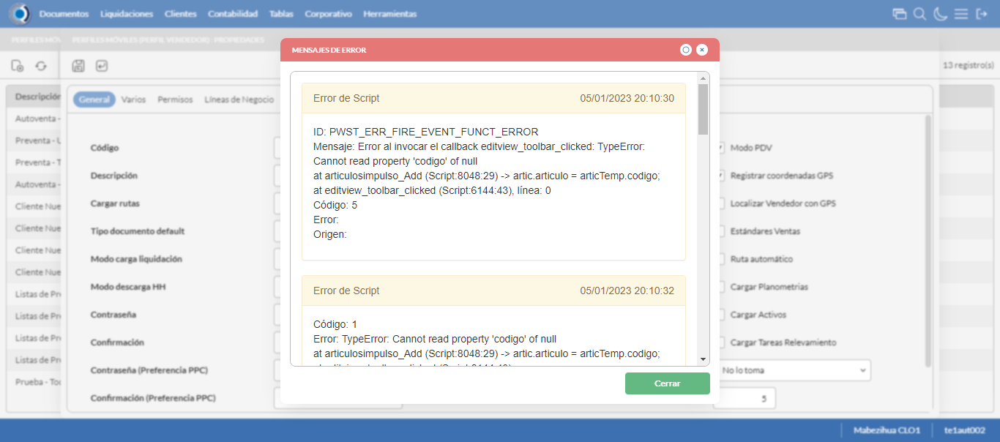
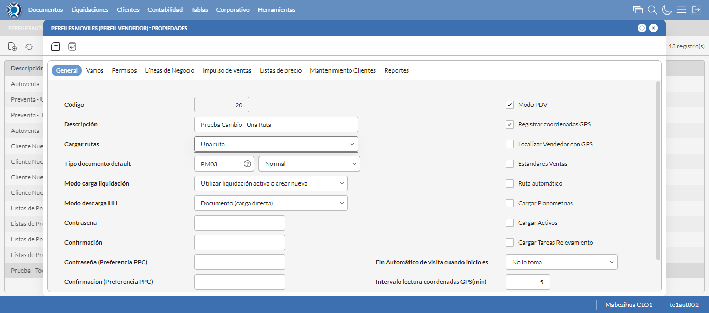
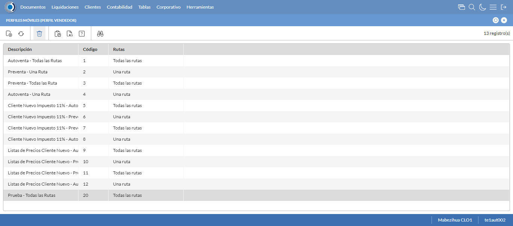

Desarrollado por : Area de Testing PWST
Fecha y hora de inicio : 2023-01-05 14:09:34
Duracion : 0:01:53.824556
Resultado : Total 8，Correctos 6 ，Errores 2 ，Taza de resultado 75.00%
Resumen 75.00% Errores 2 Fallidos 0 Correctos 6 Test realizados 8
| Caso de Prueba | Total | Correctos | Fallido | Error | Detalles | Captura del error |
| PerfilesMoviles.Test: Escenario 1 de Perfiles Moviles | 8 | 6 | 0 | 2 | Detalles | |
test |
ft1_1: 2023-01-05 14:09:36,021 - root - INFO - Se abre el chrome
2023-01-05 14:09:38,273 - root - INFO - Entra a la URL
2023-01-05 14:09:38,429 - root - INFO - Maximiza la pantalla
Traceback (most recent call last):
File "C:\Users\gerar\AppData\Local\Programs\Python\Python311\Lib\site-packages\selenium\webdriver\remote\switch_to.py", line 88, in frame
frame_reference = self._driver.find_element(By.ID, frame_reference)
^^^^^^^^^^^^^^^^^^^^^^^^^^^^^^^^^^^^^^^^^^^^^^^^^
File "C:\Users\gerar\AppData\Local\Programs\Python\Python311\Lib\site-packages\selenium\webdriver\remote\webdriver.py", line 861, in find_element
return self.execute(Command.FIND_ELEMENT, {"using": by, "value": value})["value"]
^^^^^^^^^^^^^^^^^^^^^^^^^^^^^^^^^^^^^^^^^^^^^^^^^^^^^^^^^^^^^^^^^
File "C:\Users\gerar\AppData\Local\Programs\Python\Python311\Lib\site-packages\selenium\webdriver\remote\webdriver.py", line 444, in execute
self.error_handler.check_response(response)
File "C:\Users\gerar\AppData\Local\Programs\Python\Python311\Lib\site-packages\selenium\webdriver\remote\errorhandler.py", line 249, in check_response
raise exception_class(message, screen, stacktrace)
selenium.common.exceptions.NoSuchElementException: Message: no such element: Unable to locate element: {"method":"css selector","selector":"[id="mainFrame"]"}
(Session info: chrome=108.0.5359.125)
Stacktrace:
Backtrace:
(No symbol) [0x007DF243]
(No symbol) [0x00767FD1]
(No symbol) [0x0065D04D]
(No symbol) [0x0068C0B0]
(No symbol) [0x0068C22B]
(No symbol) [0x006BE612]
(No symbol) [0x006A85D4]
(No symbol) [0x006BC9EB]
(No symbol) [0x006A8386]
(No symbol) [0x0068163C]
(No symbol) [0x0068269D]
GetHandleVerifier [0x00A79A22+2655074]
GetHandleVerifier [0x00A6CA24+2601828]
GetHandleVerifier [0x00888C0A+619850]
GetHandleVerifier [0x00887830+614768]
(No symbol) [0x007705FC]
(No symbol) [0x00775968]
(No symbol) [0x00775A55]
(No symbol) [0x0078051B]
BaseThreadInitThunk [0x76347D69+25]
RtlInitializeExceptionChain [0x7731BB9B+107]
RtlClearBits [0x7731BB1F+191]
During handling of the above exception, another exception occurred:
Traceback (most recent call last):
File "C:\Users\gerar\AppData\Local\Programs\Python\Python311\Lib\site-packages\selenium\webdriver\remote\switch_to.py", line 91, in frame
frame_reference = self._driver.find_element(By.NAME, frame_reference)
^^^^^^^^^^^^^^^^^^^^^^^^^^^^^^^^^^^^^^^^^^^^^^^^^^^
File "C:\Users\gerar\AppData\Local\Programs\Python\Python311\Lib\site-packages\selenium\webdriver\remote\webdriver.py", line 861, in find_element
return self.execute(Command.FIND_ELEMENT, {"using": by, "value": value})["value"]
^^^^^^^^^^^^^^^^^^^^^^^^^^^^^^^^^^^^^^^^^^^^^^^^^^^^^^^^^^^^^^^^^
File "C:\Users\gerar\AppData\Local\Programs\Python\Python311\Lib\site-packages\selenium\webdriver\remote\webdriver.py", line 444, in execute
self.error_handler.check_response(response)
File "C:\Users\gerar\AppData\Local\Programs\Python\Python311\Lib\site-packages\selenium\webdriver\remote\errorhandler.py", line 249, in check_response
raise exception_class(message, screen, stacktrace)
selenium.common.exceptions.NoSuchElementException: Message: no such element: Unable to locate element: {"method":"css selector","selector":"[name="mainFrame"]"}
(Session info: chrome=108.0.5359.125)
Stacktrace:
Backtrace:
(No symbol) [0x007DF243]
(No symbol) [0x00767FD1]
(No symbol) [0x0065D04D]
(No symbol) [0x0068C0B0]
(No symbol) [0x0068C22B]
(No symbol) [0x006BE612]
(No symbol) [0x006A85D4]
(No symbol) [0x006BC9EB]
(No symbol) [0x006A8386]
(No symbol) [0x0068163C]
(No symbol) [0x0068269D]
GetHandleVerifier [0x00A79A22+2655074]
GetHandleVerifier [0x00A6CA24+2601828]
GetHandleVerifier [0x00888C0A+619850]
GetHandleVerifier [0x00887830+614768]
(No symbol) [0x007705FC]
(No symbol) [0x00775968]
(No symbol) [0x00775A55]
(No symbol) [0x0078051B]
BaseThreadInitThunk [0x76347D69+25]
RtlInitializeExceptionChain [0x7731BB9B+107]
RtlClearBits [0x7731BB1F+191]
During handling of the above exception, another exception occurred:
Traceback (most recent call last):
File "C:\xampp\htdocs\versiones\automatizaciones\AutoPWST\01PM\testCase\PerfilesMoviles.py", line 30, in test
self.driver.switch_to.frame("mainFrame")
File "C:\Users\gerar\AppData\Local\Programs\Python\Python311\Lib\site-packages\selenium\webdriver\remote\switch_to.py", line 93, in frame
raise NoSuchFrameException(frame_reference)
selenium.common.exceptions.NoSuchFrameException: Message: mainFrame
|
|
||||
test_000: Ingresa a la base de datos |
pt1_2: 2023-01-05 14:09:41,531 - root - INFO - Escribe el usuario
2023-01-05 14:09:41,600 - root - INFO - Escribe la contraseña
2023-01-05 14:09:41,659 - root - INFO - Se dio clic en el boton ingresar
2023-01-05 14:09:44,972 - root - INFO - Ejecutar Enterprise
2023-01-05 14:09:49,009 - root - INFO - Cambia entre pestañas
|
|
||||
test_001: Abre menu y ejecuta pantalla |
pt1_3: 2023-01-05 14:10:05,419 - root - INFO - Abre la pantalla de Perfiles Moviles
2023-01-05 14:10:05,966 - root - INFO - La pantalla ejecutada es Perfiles Moviles
2023-01-05 14:10:05,967 - root - INFO - Captura: C:\xampp\htdocs\versiones\automatizaciones\AutoPWST\01PM\report\img screen：20230105_14_10_05.png
2023-01-05 14:10:06,118 - root - INFO - Se presiona el boton 'Nuevo', para crear un nuevo registro.
|

|
||||
test_002: Abre la ventana de nuevo y crear un registro |
pt1_4: 2023-01-05 14:10:06,656 - root - INFO - Se abrio la pantalla para el ingreso de un registro nuevo.
2023-01-05 14:10:06,704 - root - INFO - Ingresa el codigo del nuevo registro
2023-01-05 14:10:06,787 - root - INFO - Ingresa la Descripcion del nuevo registro
2023-01-05 14:10:07,125 - root - INFO - Se selecciono la opción Todas las Rutas
2023-01-05 14:10:07,198 - root - INFO - Ingresa el Tipo documento default del nuevo registro
2023-01-05 14:10:07,522 - root - INFO - Se selecciono la opción Normal
2023-01-05 14:10:08,731 - root - INFO - Se selecciono el registro de Modo carga liquidación
2023-01-05 14:10:09,386 - root - INFO - Se selecciono la opción Documento (carga directa)
2023-01-05 14:10:09,441 - root - INFO - Se dió click en el checkbox Modo PDV
2023-01-05 14:10:09,492 - root - INFO - Se dió click en el checkbox Registrar coordenadas GPS
2023-01-05 14:10:09,823 - root - INFO - Se dió click en la opción No lo toma
2023-01-05 14:10:09,889 - root - INFO - Ingresa el Intervalo lectura coordenadas GPS(min) del nuevo registro
2023-01-05 14:10:09,889 - root - INFO - Captura: C:\xampp\htdocs\versiones\automatizaciones\AutoPWST\01PM\report\img screen：20230105_14_10_09.png
2023-01-05 14:10:12,084 - root - INFO - Se hace el cambio de pestaña Varios para continuar con el registro nuevo
2023-01-05 14:10:12,140 - root - INFO - Se dió click en el checkbox Cargar resumen de cuentas únicamente del vendedor de la ruta
2023-01-05 14:10:12,189 - root - INFO - Se dió click en el checkbox Verificar límite de crédito
2023-01-05 14:10:12,243 - root - INFO - Se dió click en el checkbox Verificar opción 'guardar como' del tipo de documento
2023-01-05 14:10:12,294 - root - INFO - Se dió click en el checkbox Permitir Pagos
2023-01-05 14:10:13,343 - root - INFO - Se dió click en el botón espacio para mover la pantalla hacía abajo
2023-01-05 14:10:14,683 - root - INFO - Se selecciono el registro de Disco de Datos
2023-01-05 14:10:15,329 - root - INFO - Se dió click en la opción Autoventa
2023-01-05 14:10:15,379 - root - INFO - Se dió click en el checkbox Enviar documentos de inmediato al servidor.
2023-01-05 14:10:15,423 - root - INFO - Se hace el cambio a la pestaña Permisos para continuar con el registro nuevo
2023-01-05 14:10:18,534 - root - INFO - Se presiona el boton 'Nuevo de la pestaña Permiso' , para crear un nuevo registro.
2023-01-05 14:10:19,914 - root - INFO - Se dió click en la opción Inihibir Georeferenciación
2023-01-05 14:10:19,972 - root - INFO - Se presiona el boton 'Guardar de la pestaña Permiso', para guardar el registro.
2023-01-05 14:10:20,270 - root - INFO - Se presiona el boton 'Nuevo de la pestaña Permiso' , para crear un nuevo registro.
2023-01-05 14:10:21,133 - root - INFO - Se dió click en la opción Anular Documentos
2023-01-05 14:10:21,191 - root - INFO - Se presiona el boton 'Guardar de la pestaña Permiso', para guardar el registro.
2023-01-05 14:10:22,063 - root - INFO - Se hace el cambio a la pestaña Lineas de Negocio para continuar con el registro nuevo
2023-01-05 14:10:22,639 - root - INFO - Se presiona el boton 'Nuevo de la pestaña Permiso' , para crear un nuevo registro.
2023-01-05 14:10:24,034 - root - INFO - Se selecciono el registro de Linea de negocio
2023-01-05 14:10:24,527 - root - INFO - Se presiona el boton 'Guardar de la pestaña Linea de Negocio', para guardar el registro.
2023-01-05 14:10:24,951 - root - INFO - Se presiona el boton 'Nuevo de la pestaña Permiso' , para crear un nuevo registro.
2023-01-05 14:10:26,341 - root - INFO - Se selecciono el registro de Linea de negocio
2023-01-05 14:10:26,715 - root - INFO - Se presiona el boton 'Guardar de la pestaña Linea de Negocio', para guardar el registro.
2023-01-05 14:10:27,016 - root - INFO - Se presiona el boton 'Nuevo de la pestaña Permiso' , para crear un nuevo registro.
2023-01-05 14:10:28,414 - root - INFO - Se selecciono el registro de Linea de negocio
2023-01-05 14:10:28,791 - root - INFO - Se presiona el boton 'Guardar de la pestaña Linea de Negocio', para guardar el registro.
2023-01-05 14:10:29,120 - root - INFO - Se hace el cambio a la pestaña Impulso Ventas para continuar con el registro nuevo
2023-01-05 14:10:29,676 - root - INFO - Se presiona el boton 'Nuevo de la pestaña Impulso de Ventas' , para crear un nuevo registro.
2023-01-05 14:10:30,238 - root - INFO - Ingresa el Articulo del nuevo registro
2023-01-05 14:10:32,330 - root - INFO - Se presiona el boton 'Guardar de la pestaña Impulso de Ventas', para guardar el registro.
2023-01-05 14:10:34,376 - root - INFO - Se presiona el boton 'Nuevo de la pestaña Impulso de Ventas' , para crear un nuevo registro.
2023-01-05 14:10:34,962 - root - INFO - Ingresa el Articulo del nuevo registro
2023-01-05 14:10:37,760 - root - INFO - Se presiona el boton 'Guardar de la pestaña Impulso de Ventas', para guardar el registro.
2023-01-05 14:10:39,806 - root - INFO - Se presiona el boton 'Nuevo de la pestaña Impulso de Ventas' , para crear un nuevo registro.
2023-01-05 14:10:40,375 - root - INFO - Ingresa el Articulo del nuevo registro
2023-01-05 14:10:42,465 - root - INFO - Se presiona el boton 'Guardar de la pestaña Impulso de Ventas', para guardar el registro.
2023-01-05 14:10:44,503 - root - INFO - Se presiona el boton 'Nuevo de la pestaña Impulso de Ventas' , para crear un nuevo registro.
2023-01-05 14:10:45,085 - root - INFO - Ingresa el Articulo del nuevo registro
2023-01-05 14:10:47,162 - root - INFO - Se presiona el boton 'Guardar de la pestaña Impulso de Ventas', para guardar el registro.
2023-01-05 14:10:49,202 - root - INFO - Se presiona el boton 'Nuevo de la pestaña Impulso de Ventas' , para crear un nuevo registro.
2023-01-05 14:10:49,781 - root - INFO - Ingresa el Articulo del nuevo registro
2023-01-05 14:10:51,880 - root - INFO - Se presiona el boton 'Guardar de la pestaña Impulso de Ventas', para guardar el registro.
2023-01-05 14:10:53,929 - root - INFO - Se hace el cambio a la pestaña Mantenimiento Clientes para continuar con el registro nuevo
2023-01-05 14:10:54,507 - root - INFO - Se dió click en el checkbox Permiso agregar nuevos clientes
2023-01-05 14:10:54,562 - root - INFO - Se dió click en el checkbox Permiso modificar clientes existentes
2023-01-05 14:10:55,486 - root - INFO - Se selecciono el registro de Ruta Referencia
2023-01-05 14:10:55,767 - root - INFO - Se dió click en el checkbox Clasificación 1
2023-01-05 14:10:55,925 - root - INFO - Se dió click en el checkbox Clasificación 2
2023-01-05 14:10:56,065 - root - INFO - Se dió click en el checkbox Clasificación 3
2023-01-05 14:10:56,554 - root - INFO - Se dió click en el checkbox Colonia
2023-01-05 14:10:56,732 - root - INFO - Se dió click en el checkbox Codigo Postal
2023-01-05 14:10:56,875 - root - INFO - Se dió click en el checkbox Direccion
2023-01-05 14:10:57,080 - root - INFO - Se dió click en el checkbox Entorno PDV
2023-01-05 14:10:57,237 - root - INFO - Se dió click en el checkbox Esquina 1
2023-01-05 14:10:57,403 - root - INFO - Se dió click en el checkbox Esquina 2
2023-01-05 14:10:57,570 - root - INFO - Se dió click en el checkbox Paises
2023-01-05 14:10:57,714 - root - INFO - Se dió click en el checkbox Departamento
2023-01-05 14:10:57,861 - root - INFO - Se dió click en el checkbox Localidad
2023-01-05 14:10:58,019 - root - INFO - Se da clic en el boton Guardar; se debe crear un nuevo registro.
|

|
||||
test_003: Repite el Registro |
pt1_5: 2023-01-05 14:10:58,888 - root - INFO - Se presiona el boton 'Refrescar', para crear un nuevo registro igual al anterior.
2023-01-05 14:11:00,937 - root - INFO - Se presiona el boton 'Nuevo', para crear un nuevo registro igual al anterior.
2023-01-05 14:11:03,536 - root - INFO - Se abrio la pantalla para el ingreso de un registro nuevo.
2023-01-05 14:11:03,578 - root - INFO - Ingresa el codigo del nuevo registro
2023-01-05 14:11:03,670 - root - INFO - Ingresa la Descripcion del nuevo registro
2023-01-05 14:11:04,024 - root - INFO - Se selecciono la opción Todas las Rutas
2023-01-05 14:11:04,086 - root - INFO - Ingresa el Tipo documento default del nuevo registro
2023-01-05 14:11:04,440 - root - INFO - Se selecciono la opción Normal
2023-01-05 14:11:05,045 - root - INFO - Se selecciono el registro de Modo carga liquidación
2023-01-05 14:11:05,400 - root - INFO - Se selecciono la opción Documento (carga directa)
2023-01-05 14:11:05,458 - root - INFO - Se dió click en el checkbox Modo PDV
2023-01-05 14:11:05,526 - root - INFO - Se dió click en el checkbox Registrar coordenadas GPS
2023-01-05 14:11:05,862 - root - INFO - Se dió click en la opción No lo toma
2023-01-05 14:11:05,925 - root - INFO - Ingresa el Intervalo lectura coordenadas GPS(min) del nuevo registro
2023-01-05 14:11:07,979 - root - INFO - Se da clic en el boton Guardar; NO se debe crear un nuevo registro.
2023-01-05 14:11:10,064 - root - INFO - Se da clic en el boton del mensaje de registro duplicado
2023-01-05 14:11:12,065 - root - INFO - Captura: C:\xampp\htdocs\versiones\automatizaciones\AutoPWST\01PM\report\img screen：20230105_14_11_12.png
2023-01-05 14:11:12,268 - root - INFO - Se presiona el boton 'Cerrar', para cerrar el mensaje de duplicidad de llave primaria
2023-01-05 14:11:12,455 - root - INFO - Se presiona el boton 'Cerrar', para cerrar la ventana
|
 | ||||
test_004: Modificar el registro |
pt1_6: 2023-01-05 14:11:12,628 - root - INFO - Se presiona el boton 'Refrescar', para proceder a modificar el registro.
2023-01-05 14:11:15,204 - root - INFO - Se da clic en el registro creado, para proceder a modificarlo.
2023-01-05 14:11:17,363 - root - INFO - Se modifica el contenido del campo Observaciones 1
2023-01-05 14:11:17,731 - root - INFO - Se selecciono la opción Una Ruta
2023-01-05 14:11:17,731 - root - INFO - Captura: C:\xampp\htdocs\versiones\automatizaciones\AutoPWST\01PM\report\img screen：20230105_14_11_17.png
2023-01-05 14:11:17,892 - root - INFO - Se hace el cambio de pestaña Permisos para continuar con la modificación del registro
2023-01-05 14:11:18,816 - root - INFO - Se hace el cambio a la pestaña Lineas de Negocio para continuar con la modificación del registro
2023-01-05 14:11:19,304 - root - INFO - Se da clic en el boton Guardar; se debe modificar la informacion del registro.
|
 | ||||
test_005: Eliminar el registro creado |
ft1_7: 2023-01-05 14:11:20,397 - root - ERROR - No se dió click en el botón Refrescar, validar que la acción anterior haya finalizado, que el xpath sea el correcto o que la página no presente lentitud
2023-01-05 14:11:23,398 - root - INFO - Captura: C:\xampp\htdocs\versiones\automatizaciones\AutoPWST\01PM\report\img screen：20230105_14_11_23.png
2023-01-05 14:11:28,236 - root - INFO - Se cierra chrome
Traceback (most recent call last):
File "C:\xampp\htdocs\versiones\automatizaciones\AutoPWST\01PM\testCase\PerfilesMoviles.py", line 136, in test_005
raise Exception()
Exception
|
 | ||||
test_006: Cerrar_Navegador |
Correcto |
|
||||
| Caso de prueba | 8 | 6 | 0 | 2 | Taza de resultado：75.00% | |